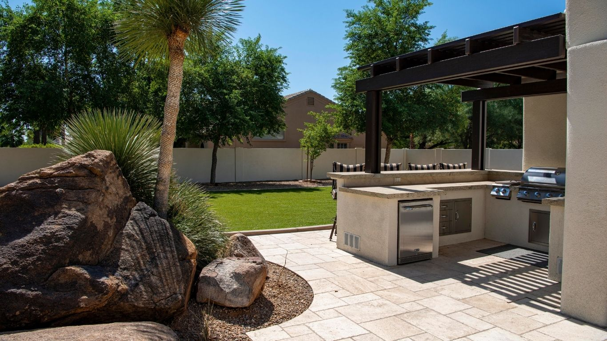
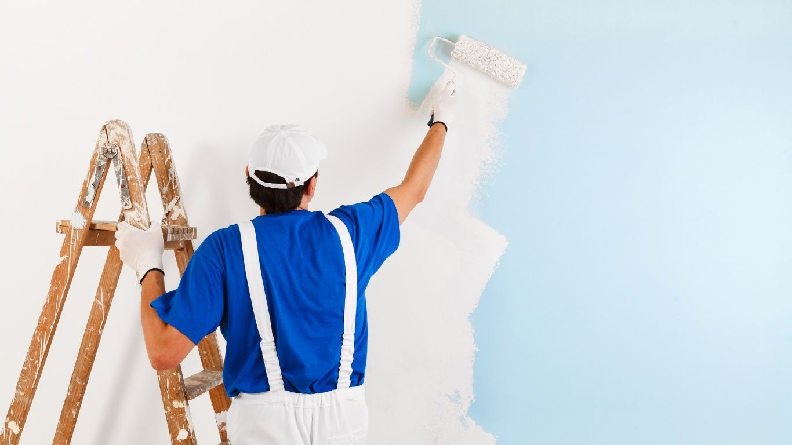
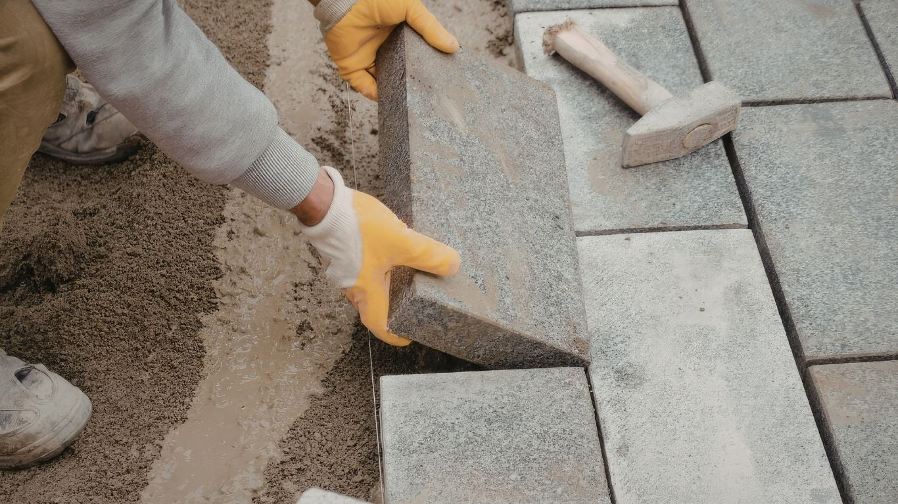
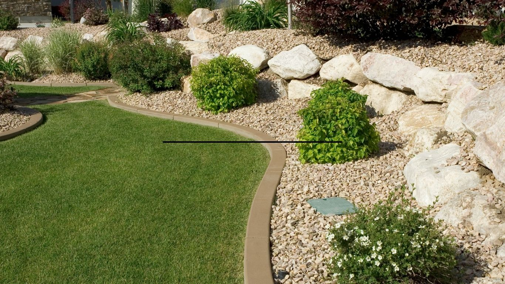
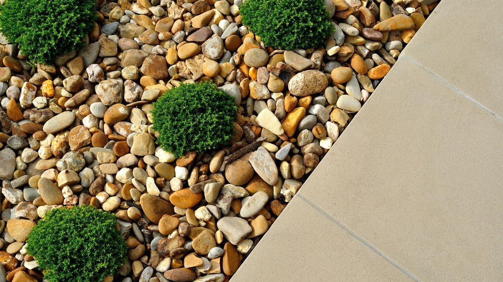

One point of contact
Move from the first idea to the finishing details.
YL ALVAREZ / HOME & PROPERTY SERVICES
From a fresh new finish to a full home built from the ground up, bring your next property project to one team.

Move from the first idea to the finishing details.
Interior, exterior and property-wide improvements.
Serving the area within about a three-hour drive.
WHAT WE DO / WHOLE-PROPERTY SERVICES
Plan one improvement or bring several projects together. Explore the services available for your home, rental or property.

01 / PROPERTY REFRESHUpdate the look and feel of a home with practical improvements inside and out.

02 / PAVERS + STONEBuild clean transitions and durable outdoor spaces with carefully laid pavers and stone.

03 / LAND + GARDENBring order and definition to the outdoor areas around your home or property.
Make an outdoor area more inviting, useful and connected to the rest of the property.
One property, many possibilities. Also available: kitchen and bath updates, ceramic and stone tile, marble and travertine, cabinets, flooring, plumbing, air conditioning, doors, windows, screens, cleaning, and new homes or efficiency units from the ground up.
Share your project ↗THE WORK / PAVERS + OUTDOOR SPACES
A closer look at paver installation, landscape finishing and outdoor living. Select a photo to view it larger.
BEFORE / AFTER — MOVE TO REVEAL
Move your pointer across a project to reveal the finished work. On a phone, drag the center handle.

THE DETAILS MAKE THE DIFFERENCE YL / 01A CLEARER WAY TO GET STARTED
Every property is different. We start by understanding your space, priorities and timeline, then talk through the work that fits.
Share the project, location and what you want to change.
Review the space, materials and the work involved.
Get aligned on a practical path for the property.
LOCAL ROOTS / WIDER REACH
YL Alvarez Home & Property Services serves Tampa and surrounding communities, with travel available up to about three hours from the area.
Check your location ↗YOUR PROPERTY / YOUR NEXT STEP
Tell us a little about the project and where it's located. We'll help you figure out a good place to begin.
Phone, WhatsApp and email buttons will activate as soon as the business contact details are added.
Quick answers based on the information on this site.